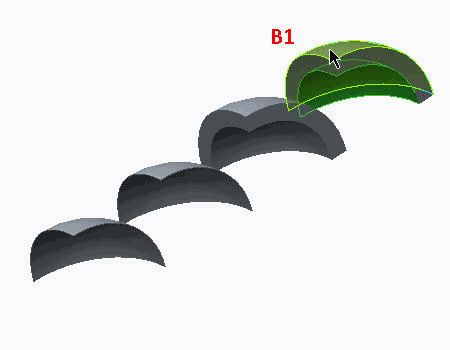

练习: 将壳对用于中间曲面模型 - 壳理想化
目标
成功完成此练习后，您将能够：
- 定义壳对理想化。
假定背景
在本练习中，将定义和使用壳理想化。其目的是通过比较厚壁和薄壁结构，检查壳理论中忽视法向应力的影响。还将检查在使用壳理想化与实体模型接近的模型中定义约束的正确过程。
在本练习中用作示例的模型显示了两种不同的理想化案例。结果将通常比较进行解释。

- 案例 A：厚壁
- 显示在位置 A1 的几何是使用开箱即用的实体元素进行模拟。
- 位置 A2 是通过壳理想化进行建模，使用 3D 实体几何中的中间平面压缩。
- 压力载荷将应用于曲面且已定义为 200 MPa。
- 案例 B：薄壁
- 位于位置 B1 的几何是使用实体元素模拟的薄板。
- 位于位置 B2 的几何是 Creo Parametric 实体薄板。该薄板是用壳理想化分析的。
- 压力载荷将应用于曲面且已定义为 10 MPa。
约束和壳对理想化必须在模型中进行定义。材料已定义为 SS，即不锈钢。
若干球坐标将在系模型中进行定义。这将有助于解释本练习中的一些结果。
“关闭窗口”(Close Window) “拭除未显示的”(Erase Not Displayed)
“拭除未显示的”(Erase Not Displayed) 
 Simulate_Modeling\ShellPairsA
Simulate_Modeling\ShellPairsA
 THICK_THIN_SHELLSB_SIMULATE.PRT
THICK_THIN_SHELLSB_SIMULATE.PRT
-
任务 1. 调查模型属性。
1. 单击“文件”(File) > “准备”(Prepare) > “模型属性”(Model Properties)。将出现“模型属性”(Model Properties) 对话框。
2. 审阅模型中所使用的单位。要关闭“模型属性”(Model Properties) 对话框，单击“关闭”(Close)。
3. 在模型树中，展开“材料”(Materials)。右键单击 SS，并选择“编辑定义”(Edit Definition)。将出现“材料定义”(Material Definition) 对话框。
4. 审阅杨氏模量值、泊松比值和所使用的单位。单击“确定”(Ok) 以关闭“材料定义”(Material Definition) 对话框。
5. 在模型树中，展开载荷/约束和载荷集 LoadSet1。右键单击 Load2，然后选择“编辑定义”(Edit Definition)。“压力载荷”(Pressure Load) 对话框随即出现。
6. 审阅用于参考的选定曲面以定义载荷。每个曲面承载了 200 MPa 的压力载荷。

指定载荷大小时，可使用数学运算符 +、–、/ 和 *。
单击“确定”(OK)，关闭“压力载荷”(Pressure Load) 对话框。
7. 使用上述过程来审阅 Load1。
-
任务 2. 定义壳对理想化。
1. 在功能区中，选择“精细模型”(Refine Model) 选项卡。
2. 在“理想化”(Idealizations) 组中单击“壳对”(Shell Pair)
 。“壳对定义”(Shell Pair Definition) 对话框随即出现。
。“壳对定义”(Shell Pair Definition) 对话框随即出现。
3. 在模型中，选择显示的曲面。
4. 单击“接受更改”(Accept Changes)
 。
。
5. 在模型树中，展开“理想化”(Idealizations) 和“壳对”(Shell Pairs)。请注意，已创建了两个壳对。
6. 在功能区中，选择“精细模型”(Refine Model) 选项卡。
7. 从 AutoGEM 组中单击“审阅几何”(Review Geometry)
 。“模拟几何”(Simulation Geometry) 对话框随即出现。
。“模拟几何”(Simulation Geometry) 对话框随即出现。
8. 选中“原始几何”(Original Geometry) 复选框。单击“应用”(Apply)。请注意已壳理想化的板的显示，如图所示。
9. 在“模拟几何”(Simulation Geometry) 对话框中，单击“关闭”(Close)。
-
任务 3. 定义约束。
1. 在功能区中，选择“主页”(Home) 选项卡。
2. 单击“约束”(Constraints) 组下拉菜单，然后选择“对称”(Symmetry)
 。将出现“对称约束”(Symmetry Constraint) 对话框。
。将出现“对称约束”(Symmetry Constraint) 对话框。
3. 在模型中，选择如图所示的边。
4. 单击“确定”(OK)。
已在壳对理想化的另外两条边上定义了两个附加的对称约束。
-
任务 4. 定义 AutoGEM 控制。
1. 在模型树中，展开“AutoGEM 控制”(AutoGEM Controls)。
2. 右键单击 AutoGEMControl3，然后选择“编辑定义”(Edit Definition)。将出现“最大元素尺寸控制”(Maximum Element Size Control) 对话框。
3. 按住 CTRL 键并选择模型中显示的曲面。
该 AutoGEM 控制为选定曲面指定 500 mm 的最大元素尺寸。
4. 在“最大元素尺寸控制”(Maximum Element Size Control) 对话框中，单击“确定”(OK)。
5. 在功能区中，选择“精细模型”(Refine Model) 选项卡。
6. 单击 AutoGEM 组中的“控制”(Control) 下拉菜单，然后选择“薄实体”(Thin Solid) > “薄实体”(Thin Solid)。“薄实体控制”(Thin Solid Control) 对话框随即出现。
7. 校验“自动选择相对曲面”(Auto Select Opposing Surfaces) 已选定。
8. 选择模型中的弯曲曲面，如图所示。
9. 单击“确定”(OK)。
10. 在功能区中，选择“精细模型”(Refine Model) 选项卡。
11. 从 AutoGEM 组中单击AutoGEM
 。将出现 AutoGEM 对话框。
。将出现 AutoGEM 对话框。
12. 单击“创建”(Create)。随即创建“实体”元素和“壳”元素。请注意网格控制对网格质量所做的改进。
13. 在所有对话框中单击“关闭”(Close)，当出现保存网格的提示时，单击“否”(No)。
-
任务 5. 定义并运行静态分析。
1. 在功能区中，选择“主页”(Home) 选项卡。
2. 在“运行”(Run) 组中单击“分析和研究”(Analyses and Studies)
 。将出现“分析和设计研究”(Analyses and Design Studies) 对话框。
。将出现“分析和设计研究”(Analyses and Design Studies) 对话框。
3. 单击“文件”(File) > “新建静态分析”(New Static)。将出现“静态分析定义”(Static Analysis Definition) 对话框。
4. 完成以下步骤：
- 在“名称”(Name) 字段中键入 shell_theory_demo。
- 选择在“约束集/元件”(Constraint Set/Component) 和“载荷集/元件”(Load Set/Component) 部分中显示的约束集和载荷集。
- 选择“收敛”(Convergence)·选项卡，然后从“方法”(Method) 下拉菜单中单击“单通道自适应”(Single-Pass Adaptive)。
- 单击“高级控制”(Advanced Control)。“高级 SPA 收敛控制”(Advanced SPA Convergence Control) 对话框随即出现。完成以下步骤：
- 选择“使用高级控制”(Use Advanced Controls)。
- 在“最大应力误差目标”(Maximum Stress Error Target) 字段中键入 1。
- 在“局部应力误差目标”(Local Stress Error Target) 字段中键入 10。
- 不要为“局部应力误差”(Local Stress Error) 字段选择任何参考。
- 在“高级 SPA 收敛控制”(Advanced SPA Convergence Control) 对话框中，单击“确定”(OK) 以返回至“静态分析定义”(Static Analysis Definition) 对话框。
- 选择“输出”(Output) 选项卡。
- 在“绘制栅格”(Plotting Grid) 字段中键入 6。
5. 单击“确定”(OK) 返回到“分析和设计研究”(Analyses and Design Studies) 对话框。
6. 单击“配置运行设置”(Configure Run Settings)
 。将出现“运行设置”(Run Settings) 对话框。
。将出现“运行设置”(Run Settings) 对话框。
7. 默认情况下，结果和临时输出目录被设置在工作目录中。两种分析都储存在此位置。单击“确定”(OK)。
8. 在“分析和设计研究”(Analyses and Design Studies) 对话框中选择 shell_theory_demo，然后单击“开始运行”(Start Run)
 。单击“是”(Yes) 以运行交互诊断。
。单击“是”(Yes) 以运行交互诊断。
9. 分析完成后，单击“显示研究状况”(Display Study Status)
 查看汇总报告。
查看汇总报告。
10. 关闭所有对话框并返回到 Creo Simulate 窗口。
-
任务 6. 创建结果窗口并检查结果。
1. 在“分析和设计研究”(Analyses and Design Studies) 窗口中选择 shell_theory_demo。
2. 单击“审阅结果”(Review Results)
 。将出现“结果窗口定义”(Result Window Definition) 对话框。
。将出现“结果窗口定义”(Result Window Definition) 对话框。
3. 完成以下步骤：
- 校验已将“条纹”(Fringe) 选定为“显示”(Display) 类型。
- 选择“数量”(Quantity) 选项卡。
- 校验“应力”(Stress) 已选定。
- 从下拉菜单中选择 MPa。
- 从“分量”(Component) 下拉菜单中选择 von Mises。
4. 单击“确定并显示”(OK and Show)。
5. 检查 von Mises 应力条纹图。请注意，对于薄壁几何，应力的差别会非常小，但对于厚壁几何却比较大。
6. 在厚壁结构中，不忽略垂直于壳曲面的应力。为证明这一点，使用已定义的用于厚壁实体几何的球坐标系，为径向应力绘图。请记住：径向应力 (即第三主应力) 在厚壁内等于 200 MPa，在厚壁外等于零。当使用壳理想化时，该值为零。
7. 单击“文件”(File) > “退出结果”(Exit Results) 返回至 Creo Simulate。在“消息”(Message) 对话框中单击“否”(No)。
8. 在“分析和设计研究”(Analyses and Design Studies) 对话框中，单击“关闭”(Close)。
9. 单击“文件”(File) > “管理会话”(Manage Session) > “拭除当前”(Erase Current) 以关闭显示的窗口，并从内存中拭除模型。当提示您确认时，请单击“是”(Yes)。
练习就此结束。